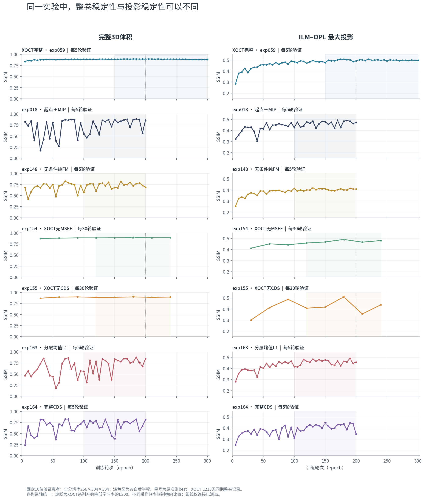
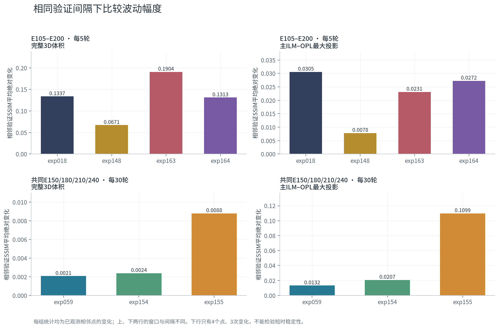
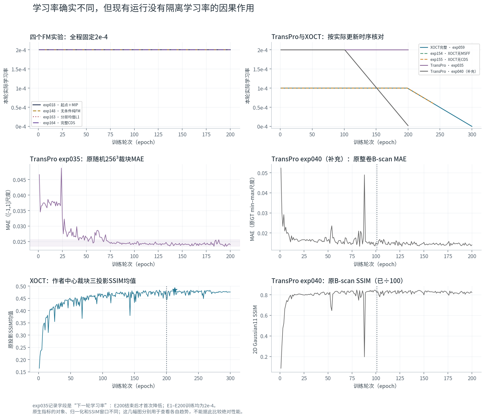
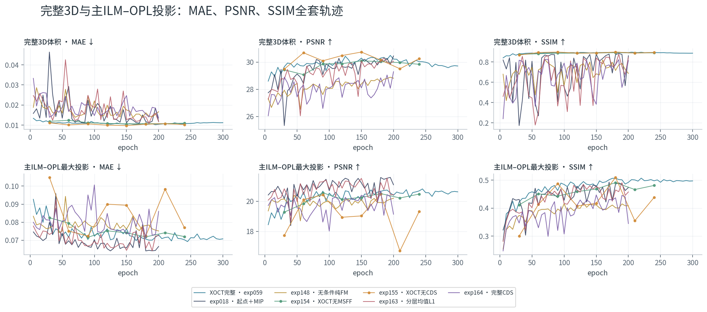
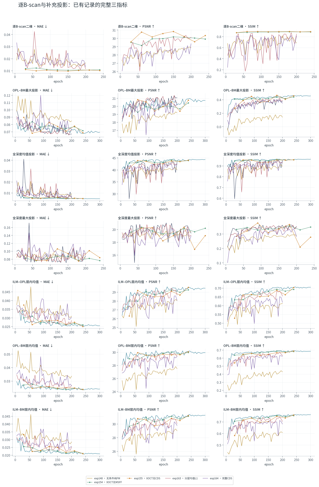

实验记录分析 · 2026年11月16日 · exp173
指标的波动，出现在哪里？
确实存在指标不稳，主要集中在几组3D流匹配的完整体积结果，以及XOCT无CDS组的浅层投影。现有记录支持把学习率列为排查项，尚不能认定它是主因。
8个主实验＋1个TransPro补充版本；原始指标、真实学习率、原best与最终轮分开保留。最近五个完整训练：exp164 / exp163 / exp155 / exp154 / exp148。
后半程波动对照
相邻平均变化＝相邻已测点SSIM差的绝对值均值。每30轮验证的两组消融只有4个后半程点，不能与每5轮的数值直接排名。


几次回落在多数患者中同时出现
这些均为同10位验证患者的相邻检查点；没有更换病例。波动不只体现在SSIM单一读数，MAE也在多数患者中同步变差。各对象的PSNR变化见逐患者配对表。
学习率能解释多少？
“指标不稳与学习率有关”是合理候选解释。学习率决定一次更新的尺度，PyTorch也提供验证停滞后降低学习率的机制；这不等于每次波动都由学习率过大引起。现有结果没有只改变学习率的配对对照，不能作因果结论。
四个FM实验全程2e-4，且后半程仍有明显整卷起伏，值得检查学习率。但相同2e-4下，exp148浅层投影相邻变化仅0.0078，exp018为0.0305；采样、条件、损失与BF16等同时不同。相同标量学习率也不代表不同优化器/网络具有相同有效步长。
exp155在E180→E210的主投影SSIM从0.509291降到0.354735，10/10患者同向变差；此时学习率已从1e-4降到8.91e-5。下降中的学习率仍会伴随大幅回落，因此不能把稳定性当作学习率曲线的直接结果。
XOCT中心裁块指标的相邻轮平均绝对变化从E151–199的0.009946降到E251–300的0.003747，与降学习率同向。后期训练成熟、GAN状态与学习率一起变化；两个时间窗口也不是同一实验时段，仍不能单独归因。
TransPro exp035实际200轮恒定2e-4。其配置/记录里的衰减不能当作已经作用于训练：首次低值0.0001980198是E200结束后留给E201的。exp040确实降低了学习率，但E101–200的原B-scan MAE仍有波动，且未超过E83的原MAE best；它还改变了教师模式、D缩放、验证流程等，不能用035/040差异估计LR效应。
exp164还有已记录的监督/梯度现象：精确t0分支训练中，CDS目标占主要损失数值，t0总梯度在所有20,000次更新都触发clip1。它说明优化受到多项设置共同影响；损失数值比不是分量梯度比，不能据此断定原因。
选模目标也会放大“投影看着最好、整卷却很差”的现象。exp164原best E150的验证3D SSIM仅0.381905，紧接E155为0.812230；E150依然因浅层投影SSIM0.446775入选。这是原规则的真实取舍，与是否存在学习率问题需分开解释。
PyTorch学习率调整说明仅提供一般机制，不能作为本项目因果证据。

TransPro需要单独阅读
原随机裁块MAE：后半程范围 0.023479–0.025587，相邻平均绝对变化 0.000371。全程并非没有尖峰：E23→E24的MAE由0.036545升到0.048736，随后回落。后半程的小幅起伏不能反推前期同样稳定，也不能据此宣布其完整投影稳定。
补充exp040：原逐B-scan SSIM后半程范围 0.780430–0.846573，相邻平均绝对变化 0.012278。前半程E87→E88出现明显尖峰：原B-scan SSIM由0.805244降至0.197413，MAE由0.017410升至0.048974；当时LR仍为2e-4。这是原GT min–max、Gaussian11二维口径，不是3D SSIM。后期波动较小也不能仅归因于降LR，因为训练阶段同时改变。
八月历史版本的逐轮训练/验证/LR记录缺失，本报告不对其稳定性给出判断。
原best与最终轮：完整三指标
每格依次为 MAE↓ / PSNR↑ / SSIM↑，所有组使用同一个原best；最终轮只作补充。这里展示验证集，未混入正式测试。

逐B-scan二维：MAE / PSNR / SSIM
OPL–BM最大投影：MAE / PSNR / SSIM
全深度均值投影：MAE / PSNR / SSIM
全深度最大投影：MAE / PSNR / SSIM
ILM–OPL层内均值：MAE / PSNR / SSIM
OPL–BM层内均值：MAE / PSNR / SSIM
ILM–BM层内均值：MAE / PSNR / SSIM
逐B-scan与补充投影全轨迹图

TransPro原best的原生B-scan三指标（独立协议）
此处复用exp058保留的同10人完整视野记录。exp035这个完整评价MAE与其逐轮随机裁块MAE不是同一对象。固定/255、win7的普通3D和en-face组未取得，不能从原生B-scan数值替代。
实验范围、原选模与指标口径
范围以2026年11月16日21:13前后的服务器只读快照冻结。按编号倒序筛选跑满原训练预算的科学实验：exp164、exp163、exp155、exp154、exp148。分析/测试编号不重复计入训练模型；exp156/159/161/162缺完成训练证据，exp168已停止，exp169/170/171/172在快照时未完成，均不凑入五个。八月TransPro没有完整逐轮历史，不能判断其训练稳定性。
统计描述训练过程中固定验证集的跨轮变化。未读取测试患者数组、未新增推理或训练，未用测试结果判断学习率、重选检查点或决定超参数。测试集一次评估中的患者标准差不能代替跨轮稳定性。
全程曲线保留原验证频率，后半程定义为epoch严格大于原预算的一半。相邻变化量为相邻已测点差的绝对值；并同时保留最大恶化、原始范围、去线性趋势残差标准差和符号翻转次数。原始范围可能包含改善趋势，不能单独当作噪声大小。没有套用通用“稳定/不稳”阈值，也没有对自相关轮次做独立样本显著性检验。
FM按共同E105–200、每5轮比较；XOCT与两组消融补充按共同E150/180/210/240比较，后者仅4点、3次变化。每30轮验证的平稳连线不能排除未采样时段的短时波动。学习率前后比较采用连续窗口，保留每个窗口的点数和真实LR；不把绝对LR与逐轮指标相关性当作因果检验。
标准组均使用完整256×304×304视野、10位固定验证患者、未量化float32预测、固定/255 GT和data_range=1。完整3D SSIM在三维计算；逐B-scan为每个Y位置的[Z,X]切片，304张先卷内再患者平均；PSNR也先分别评分再平均。标准SSIM为uniform win7、sample covariance，不能替代TransPro原Gaussian11结果。
主ILM–OPL投影为沿深度的层内最大值，补充对象分别为OPL–BM最大、全深度均值/最大及三种层内均值。XOCT来源的掩膜/层边界沿原实现，FM沿原native640中心映射和闭区间；其层边界并未在本次强行改写。各来源的窗口、融合、数值后端、训练协议不同，跨模型比较是描述性比较，不是单变量LR对照。
TransPro exp035每轮只有作者随机256³裁块、[-1,1]尺度MAE，且G在训练模式；不存在可据此替代的逐轮完整3D或浅层MIP三指标。exp040原记录为GT min–max归一化的逐B-scan评价，原SSIM数值除100显示；其MAE-V/PSNR-V/SSIM-V为血管加权协议，单独保留在native表，不充作普通en-face投影。该区分与TransPro论文§4.2一致。
所有主best均复核原准则：exp018 E170、exp148 E130、exp154/155 E180、exp163 E190、exp164 E150、exp035 E194、exp040 E83。XOCT以当前默认比较偏好展示作者原准入规则best E213；原交付主权重E300另作最终轮补充。XOCT完整验证仅每5轮，无E213同期标准整卷记录，本次不以E210/E215代替。
精度沿历史实际设置保留：exp018与XOCT系列为float32且TF32关闭；exp148为BF16 autocast、float32状态/损失、TF32允许、无scaler；exp163/164为float32、TF32允许、AMP/scaler关闭、benchmark开、deterministic关。近期TransPro035为float32、AMP/scaler关闭、matmul TF32关、cuDNN TF32开；exp040为另一明确调整的后端配置。历史标志以source协议和运行记录为准，没有重新标为统一严格FP32。
完整审计通过：846份来源指纹、1,980条完整训练轮记录、236次标准整卷验证、5,532个标准指标值、原9组best复核。每个标准聚合值均重新核对对应10位患者的均值。另保留TransPro逐轮原生记录与XOCT作者中心裁块记录。
本任务只读服务器，未上传报告、未申请/释放GPU、未改环境、未改变训练设置；未创建压缩交付包。报告及来源目录可直接复制。
若要检验学习率
如果下一步专门验证学习率，优先在新的编号实验里做一个配对对照：保持exp018或其明确选定的现行基线的网络、初始化、数据/裁块/时间序列、损失、精度、预算和原选模准则一致，仅改变预先声明的学习率日程。训练预算保持完整；固定验证集同时观察3D、B-scan及各投影三指标。具体日程应在实施前固定，现有结果不足以选出“最佳学习率”，也不能保证降低后指标一定改善。当前已交付/在跑实验保持原设置，本报告没有启动该对照。